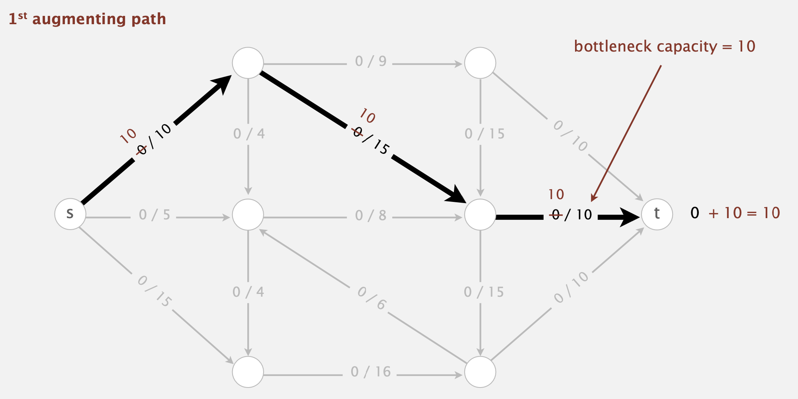

11 Maximum Flow
Introduction
- Mincut problem
- Input: An edge-weighted digraph (each edge has a positive capacity), source vertex \(s\), and target vertex \(t\).
Definition 1
- A \(st\)-cut (aka. cut) is a partition of the vertices into two disjoint sets, with \(s\) in one set \(A\) and \(t\) is the other set \(B\).
- Its capacity is the sum of the capacities of the edges from \(A\) to \(B\).
- Minimum \(st\)-ct (mincut) problem: Find a cut of minimum capacity.
- Maxflow problem:
- Input: An edge-weighted digraph (each edge has a positive capacity), source vertex \(s\), and target vertex \(t\).
Definition 2
- A \(st\)-flow (aka. flow) is an assignment of values to the edges such that:
- Capacity constraint: \(0\leq\text{edge's flow}\leq\text{edge's capacity}\)
- Local equilibrium: inflow = outflow at every vertex (except \(s\) and \(t\)).
Definition 3 The value of a flow is the inflow at \(t\) (we assume no edges point to \(s\) or from \(t\)).
- The maximum flow problem is the find a flow of maximum value.
- Essentially, the mincut problem and the maxflow problem are dual (=equivalent).
Ford-Fulkerson Algorithm
- Initialization: Starts with a flow of value 0.
- Augmenting path: Find an undirected path from \(s\) to \(t\) such that:
- Can increase flow on forward edges (not full) 
- Can decrease flow on backward edge (not empty)
- Termination: All paths from \(s\) to \(t\) are blocked either by a
- Full forward edge, or an
- Empty backward edge.
Figure 4: Termination of Maxflow
Algorithm (Ford-Fulkerson's Algorithm):
INPUT: Edge-weighted digraph, source vertex s, target vertex t
OUTPUT: Maximum flow
Start with 0 flow
while (there exists an augmenting path) {
1. find an augmenting path
2. compute the bottleneck capacity
1. increase flow on that path by bottleneck capacity
}Maxflow-Mincut Theorem
Definition 4 The net flow across a cut \((A,B)\) is the sum of the flows on its edges from \(A\) to \(B\) minus the sum of the flows on its edges from \(B\) to \(A\).
- In this example, we use black nodes to represent the set \(A\) and white nodes to represent the set \(B\).
- Therefore, the sum of flows from \(A\) to \(B\) (bold black arrows) is \(10+10+0+0+10+5=35\), and the sum of flows from \(B\) to \(A\) (bold blue arrows) is \(0+0+5+5=10\).
- The net flow across the cut is \(35-10=25\).
Example 1 (Flow-Value Lemma) Let \(f\) be any flow and let \((A,B)\) be any cut. Then, the net flow across \((A,B)\) equals the value of the flow \(f\).
- To think of this lemma intuitively, we can consider the conservation of flow. More formally, we can prove it via induction
Proof. (by Mathematical Induction). We will induct on the size of \(B\)
Base Case: \(B=\{t\}\).
Inductive Steps: remains true by local equilibrium when moving any vertex from \(A\) to \(B\).\(\qquad\blacksquare\)
Corollary 1 Outflow from \(s\) \(=\) the inflow to \(t\) \(=\) value of flow.
Example 2 (Weak Duality) Let \(f\) be any flow and let \((A,B)\) be any cut. Then, the value of the flow \(f\) is \(\leq\) the capacity of the cut \((A,B)\).
Proof. Note that \[\begin{aligned}\text{Value of flow }f &= \text{net flow across cut }(A, B)&\textit{Flow-value Lemma}\\&\leq \text{capacity of cut }(A, B) &\textit{Flow bounded by capacity}.\end{aligned}\] The proof is complete. \(\qquad\blacksquare\)
Theorem 1 (Augmenting path theorem) A flow \(f\) is a maxflow \(\iff\) no augmenting paths.
Theorem 2 (Maxflow-mincut theorem) Value of the maxflow \(=\) capacity of mincut.
- There exists a cut whose capacity equals the value of the flow \(f\).
- \(f\) is a maxflow.
- There is no augmenting path with respect to \(f\).
1 \(\implies\) 2: Suppose that \((A,B)\) is a cut with capacity equal to the value of \(f\). Then,
\[ \begin{aligned} \text{value of any flow } f' &\leq \text{capacity of } (A,B) && \textit{(by weak duality)} \\ &= \text{value of } f && \textit{(by assumption)} \end{aligned} \]
Thus, \(f\) is a maxflow. \(\quad\square\)
2 \(\implies\) 3: We will prove the contrapositive, i.e., \(\neg 3 \implies \neg 2\). Suppose that there is an augmenting path with respect to \(f\). Then, we can improve the flow \(f\) by sending flow along this path, which implies that \(f\) is not a maxflow. \(\quad\square\)
3 \(\implies\) 1: Suppose that there is no augmenting path with respect to \(f\). Let \((A,B)\) be a cut where \(A\) is the set of vertices connected to \(s\) by an undirected path with no full forward or empty backward edges. By definition of cut, \(s \in A\). Since there is no augmenting path, \(t \in B\). Then,
\[ \begin{aligned} \text{capacity of cut} &= \text{net flow across cut} && \textit{(forward edges full; backward edges empty)} \\ &= \text{value of flow } f && \textit{(flow-value lemma)} \end{aligned} \]
We complete the proof. \(\quad\square\)
- To compute mincut \((A,B)\) from maxflow \(f\):
- By augmenting path theorem, no augmenting paths with respect to \(f\).
- Compute \(A=\) set of vertices connected to \(s\) by an undirected path with no full forward or empty backward edges.
Figure 6: Mincut from Maxflow
Java Implementation of Ford-Fulkerson Algorithm
- Augmenting path revisit: it is a sequence of edges from \(s\) to \(t\), where each edge is:
- either “non-full forward edge”
- or “non-empty backward edge”.
- Bottlenect capacity: the minimum capacity of the edges in the augmenting path.
- Bad news: number of augmenting paths could be equal to the value of the maxflow.